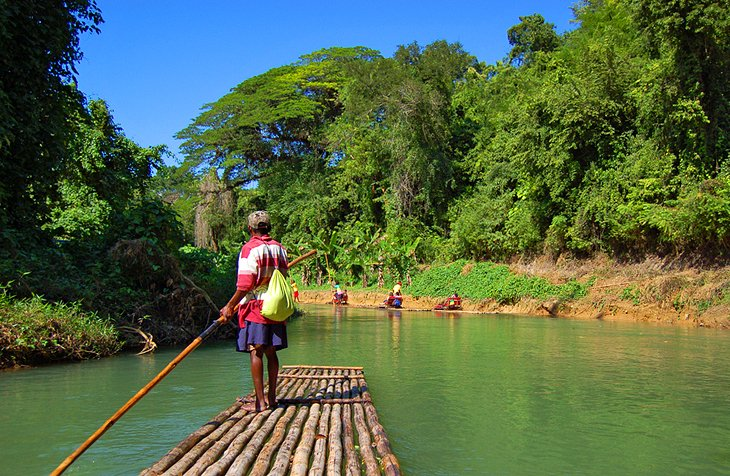

INTO THE HEART OF ASIA

With
SAFARI TOURS ,Boat trips create bonding experiences with family and friends. The lasting memories you can make
while on a boat trip are priceless. Think about watching
a sunset on the water with your best friends, fishing for bluegill with your kids, or admiring the wildlife.
A day in the sun allows our bodies to soak up a safe amount of Vitamin D. With the use of sunscreen, Vitamin D is an important vitamin that one needs in order to survive.
VISIT THE SAND DUNES IN THIS GLOBE
Though deserts can be some of the most daunting places
for travel, people across the globe are still flocking to the arid regions.
What’s in store for travelers willing to brave the hot, dry weather? A combination of time spent hiking,
camping, rock climbing and natural photography.
VOYAGE TO THE BEYOND IN AFRICA
AFRICA
There's nowhere like it on the planet for wildlife
lands rich traditions that endure. Prepare to
fall in love.
ASIA
From the nomadic steppes of kazakhstan to the
frenetic streets of hanoi, Asia is a continent so full
of intrige, adventure, solace, and spirituality.